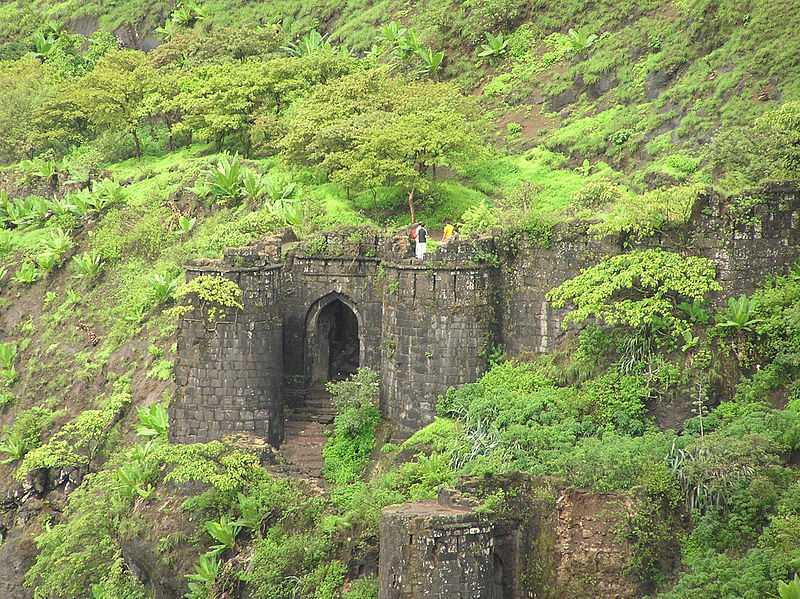

1.Sinhagad Fort
It is Located near the Pune district in Maharashtra.
The fort is also on the famous fort in Maharashtra which
has a great history of Tanaji Malusare.
The fort was captured by Tanaji Malusare and his brother.
Sinhagad (Lion's Fort) fort was strategically built to provide natural protection from
the enemies due to its very steep slopes. The walls of the forts and bastions were constructed only at key
places.There are two gates to enter the fort named Kalyan Darwaja and Pune Darwaza. The Kalyan Darwaja is towards
the southeast
while the Pune Darwaza is towards north east.This fort is also called as center fort of
Maratha empire as it is surrounded by many forts beside. During the clear climate you can see Rajgad,
Purandar and Torna forts from the Sinhagad killa.
Read More
2.Raigad Fort
Located at a distance of 132 kms from Pune,
Raigad was the capital of Chhatrapati Shivaji and the Britishers
named it as the Gibraltar of the East as this well-fortified structure atop
a hill had defied various attackers. This fort in Pune is a monument of great
pride for the Marathas and accounts to their glorious past.Raigad fort is located
@25 kilometers from Mahad town and @125 km away from Pune City and took
@ 4 hours for us to reach there as most of the drive way is Ghat road and
single road. This fort falls under Sahyadri mountain range. It rises 2700 feet
above sea level. There are three ways to reach this fort. One is Steps road in which one
has to climb @1500 steps to reach the top. Second one is Trekking road which
will take to the top and third one is Ropeway which is known as the Raighad
Ropeway and was built by Jog Engineering Limited in 1996.
Read More

3.Shivneri Fort
Shivneri Fort is the birthplace of Chhatrapati Shivaji Maharaj who was the founder of the Maratha Empire.
This association has made the fort a sacred location and the government has declared Shivneri Killa as a protected monument.
The history of Shivneri fort is honored to witness the birth of Shivaji on 19th February 1630.
Shivneri Fort in MaharashtraSituated near Junnar, Shivneri fort in Pune can be traced back to the 17th century.
The sturdy fortification and the magnanimous structure is home
to a grand statue of the Maratha warrior Shivaji.
This is one of the forts in Pune which can be reached through a
trek up a hilly terrain or through a motorable road.
Read More